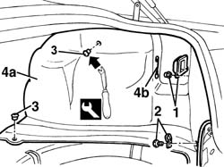
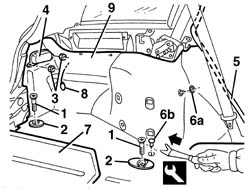

7040B06 side trim (one) lh or rh, load compartment/load platform - r r
- Path
- Procedures > 70 FITTINGS > 7040 BODYSHELL INTERIOR TRIMS AND FITTINGS > 7040B luggage compartment and load platform trims > 7040B06 side trim (one) lh or rh, load compartment/load platform - r r
- Kind
- repair procedure (removal / refitting; the operation number is the code)
- Applies to
- all engines; all production periods
- Interactive page
- https://sloeber94.github.io/elrnDB-a156/en/#/3238807
Applies to: all engines; all production periods; only with equipment: Sedan
 Removing
Removing
 Refitting
Refitting7040B10 load platform (luggage platform) trim - r+r
7040B22 luggage compartment/load platform moulding - r+r
1. Remove the protection for the rear light cluster.
2. Undo the bolt and seal.
3. Remove the retaining buttons using the special tool.
 | Name | Country |
|---|---|---|
1 | Scraper blade | 1.823.015.000 |
4. Remove the side trim (4a). For the right side trim, release the safety rod (4b) for opening the fuel flap.

Applies to: all engines; all production periods; only with equipment: Sedan
Refitting
RemovingCheck that the trim is undamaged.
Position the side trim. For the right trim, insert the fuel flap safety rod in position.
Do up the retaining studs.
Tighten the bolt and seal.
Refit the light protection.
Applies to: all engines; all production periods; only with equipment: Station Wagon
Removing
Refitting7040B22 luggage compartment/load platform moulding - r+r
7040B15 (One), rear side trim mounting BRACKET left or right - R.R .
7040B28 PET transport PROTECTION and load carrying compartment COVER COMBINATION BLIND - R.R.
- 7040L44 rear compartment scuff strip - r r
7050A47 SIDE PANEL (one) for rear seat BACKREST., left or right - R.R .
1. Unscrew the bolts
2. Remove the mountings.
3. Unscrew the nuts.
4. Remove the light protection.
5. Remove the door housing seal, in the area of the side trim.
6. Release the retainer (6a) and the retaining button (6b) using the special tool.
| Name | Country |
|---|---|---|
6 | Scraper blade | 1.823.015.000 |
7. Move the load carrying compartment moving cover slightly.
8. (For the right side trim only) Release the fuel flap opening safety rod.
9. Remove the side trim.

Applies to: all engines; all production periods; only with equipment: Station Wagon
Refitting
RemovingCheck that the side trim is not damaged.
Position the side trim.
(For the right side trim only) Engage the fuel flap opening safety rod in its housing.
Position the load carrying compartment moving cover.
Engage the retainer and the retaining button.
Fit the door housing seal, in the area of the side trim
Position the light protection and fix it using the nuts.
Position the mountings and secure them using the bolts.
7050A47 SIDE PANEL (one) for rear seat BACKREST., left or right - R.R .
- 7040L44 rear compartment scuff strip - r r
7040B28 PET transport PROTECTION and load carrying compartment COVER COMBINATION BLIND - R.R.
7040B15 (One), rear side trim mounting BRACKET left or right - R.R .
Topics linked from this page (5)
- 7040B10 load platform (luggage platform) trim - r+r
- 7040B15 (One), rear side trim mounting BRACKET left or right - R.R .
- 7040B22 luggage compartment/load platform moulding - r+r
- 7040B28 PET transport PROTECTION and load carrying compartment COVER COMBINATION BLIND - R.R.
- 7050A47 SIDE PANEL (one) for rear seat BACKREST., left or right - R.R .
Topics that link to this page (10)
- 4420A10 l/h or r/h rear suspension spring/damper unit (one) r+r
- 4420A12 rear suspension damper (one), lh or rh - for mcpherson strut system - includes dismentling/rebuilding of assembly at bench r r
- 5570T85 cd/audio player loader - r r
- 7015B44 tail gate catch control cable - r+r
- 7025C32 fuel filler flap catch control - r+r
- 7040B18 l/h or r/h side trim (one) of luggage compartment/load platform - arrange
- 7065B10 l/h or r/h rear safety belt (one) - r+r
- 7065B40 Rear seat belt reel mounting BRACKET , (one), left or right - R.R .
- 7095B66 TAILGATE LEFT integrated WIRING - R.R.
- 7095B68 TAILGATE RIGHT incorporated WIRING - R.R.